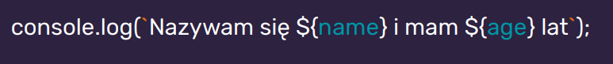
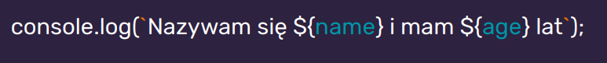

Backtick / backquote
;

Ala ma kota
JavaScript to skryptowy język programowania.
ECMAScript 6+ - ECMAScript jest to ustandaryzowany przez organizację ECMA skryptowy język programowania
JavaScript implementuje rzeczy ze specyfikacji ECMAScript. Składa się z : wartości, operacji porównania, zmiennych, literałów, obiektów i funkcji.
Wiecej informacji znajdziesz w zakładce JavaScript
;